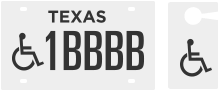

Two required items you need to use UTEP ADA parking spots

1. Possession of state placard
or ADA plates
2. UTEP ADA Parking Permit
Disabled Parking Areas are enforced every day, 24 hours a day.
Possession of state placard or ADA plates is required for issuance of ADA parking permit.
A Class H ADA permit allows the holder to park in any ADA space in the zone (color) designated by the permit except for those spaces specifically marked as reserved.
Annual permit fees will be assessed based on the zone requested.
Access to the UTEP Sun Bowl Parking Garage requires obtaining a PG-1 permit and an RFID Tag from the Parking and Transportation Services Office.
Designated ADA spaces may only be used by individuals who have met the requirements of State law and whose vehicles display the proper State issued identification device and preferably only by persons with severe mobility impairment (wheel chair or walker assisted).
All ADA individuals are asked to register their vehicles on campus to avoid delays at the entrance gates and to assist the University in assessment of the need for disabled parking spaces.
All ADA including disabled veterans must show documentation from the County Tax Office that they are authorized to use disabled parking privileges before vehicle(s) can be registered or park on University property. The disabled person to whom the State issued parking privileges have been issued must be present in any car entering the campus which displays the disabled identification devices. Proof of Registered ADA status must be carried when using ADA parking privileges, and must be presented upon request to authorized officers or officials. Persons with authorized ADA parking privileges may park in any spaces where parking is appropriate but may not park in a restricted or prohibited area such as yellow zone/fire lane, tow-away, or marked reserved space. Vehicles with Disabled Veteran plates are not automatically allowed to park in ADA spaces unless the requirements of State Law (Vernon Civil Statues article 6675a-5e) are met and proper State issued identification device is in place.